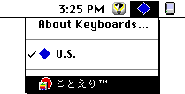

|
|
This technote describes the mechanism introduced in Mac OS 8 to support JIS (Japanese Industrial Standards) keyboards. Developers designing input methods or applications that rely on keyboard layout information should read this technote.
Updated: [Feb 22 1999]
|
JIS Keyboards
Macintosh keyboards sold in Japan come in two flavors: US and JIS. As the name suggests, US keyboards are identical in layout to keyboards sold in the United States. JIS keyboards are unique to Japan and feature additional key caps designed for input method functions. For example, the iMac keyboard has the following JIS layout in Japan.
Figure 1 - The iMac keyboard in Japan
|
Note:
JIS (Japanese Industrial Standards) are developed by the Japan Industrial Standards Committee. JIS is a voluntary national standard, similar to ANSI in the United States.
|
The World Before Mac OS 8
Japanese versions of the Mac OS contain additional resources to accommodate US and JIS keyboard layouts. Prior to Mac OS 8, this took the form of six extra keyboard-layout resources.
| Name |
Script |
How Japanese characters
are typed |
Keyboard layout |
| Kana | Japanese | Kana | US |
| Kana - JIS | Japanese | Kana | JIS |
| Romaji | Japanese | Romaji | US |
| Romaji - JIS | Japanese | Romaji | JIS |
| U.S. | Roman | N/A | US |
| Roman - JIS | Roman | N/A | JIS |
Table 1: Keyboard-layout resources (resource type 'KCHR') in Mac OS 7.x
Users were required to configure the correct keyboard-layout resource for each installed script by selecting it in the Keyboard control panel. Since only keyboard-layout resources that belong to the current script are displayed in the control panel, and a Japanese system typically contains two scripts (Japanese and Roman), at least two operations were necessary to specify the type of keyboard attached to the computer.
For example, in the case of a JIS keyboard, the user would first select "Roman - JIS" in the Keyboard control panel.
Figure 2 - Selecting "Roman - JIS" in the Keyboard control panel
Next, the user would switch the active script to Japanese (from the script menu), and select "Kana - JIS" or "Romaji -JIS" from the Keyboard control panel, depending on their preferred method of typing.

Figure 3 - Switching the active script to Japanese
Figure 4 - Selecting "Kana - JIS" in the Keyboard control panel
|
Note:
While keyboard selections are persistent across restarts in all versions of the Mac OS, the active script is reset when the computer starts up.
|
Selecting an incorrect keyboard type for either Japanese or Roman scripts would cause strange behavior. For example, selecting a non-JIS layout from the Keyboard control panel when a JIS keyboard was in fact connected would result in certain keys not generating keyDown events. This is because JIS keyboards feature additional keys that are not present on standard US keyboards; in the standard US keyboard-layout resource, non-existent keys are mapped onto nil character codes which do not generate keyDown events. To make matters worse, some keys actually map onto different characters altogether.
Another problem prior to Mac OS 8 was the lack of a reliable method to determine whether a keyboard's layout was JIS or not. Input methods circumvented this by maintaining static tables of keyboard IDs that were known to be JIS. By comparing the KbdType low- memory global variable (LMGetKbdType) to keyboard IDs in their internal tables, input methods could determine if an arbitrary keyboard was JIS or not. Needless to say, every time Apple shipped a JIS keyboard with a new ID, these hard-coded input methods would break and require updating.
As if this weren't confusing enough, most input methods bypassed the Keyboard control panel altogether and implemented their own Kana and Romaji settings. So, in fact, it didn't make a difference whether "Romaji / Romaji-JIS" or "Kana / Kana-JIS" was selected in the Keyboard control panel.
Back to top
The World After Mac OS 8
To remedy the above problems, Apple made the following improvements in Mac OS 8:
- New Key-Remap Resources
Instead of requiring users to adjust settings in the Keyboard control panel according to the type of keyboard attached, key-remap resources (resource type 'itlk') were added to support JIS keyboards in Mac OS 8.0. Since the keyboard type is handled at the key-remap resource level, keyboard layout settings no longer need to be visible to the user. As a result, JIS-specific keyboard layout resources became redundant and were removed.
| Name |
Script |
How Japanese characters
are typed |
Keyboard layout |
| Kana | Japanese | Kana | Any |
| Romaji | Japanese | Romaji | Any |
| U.S. | Roman | N/A | Any |
Table 2: Keyboard-layout resources (resource type 'KCHR') in Mac OS 8
By keeping keyboard-layout resources independent of the keyboard type, just three resources are required to support both JIS and non-JIS keyboards.
- KBGetLayoutType
A new API, KBGetLayoutType, was introduced in Mac OS 8.0 to return the layout type (ANSI, JIS, or ISO) of the current keyboard. By using this API, input methods no longer need to hard-code a list of JIS keyboard IDs, and they will remain compatible when Apple introduces new keyboards.
Note: The KeyboardsLib library is required to use this API.
- A new Keyboard control panel
With Mac OS 8.0, Apple introduced a new Keyboard control panel. In addition to user interface consolidation and refinements, the new control panel hides keyboard-layout resources for two-byte scripts from the user. This is possible because keyboard layouts are now handled by key-remap resources and responsibility for specifying how Japanese characters are typed (Kana or Romaji) now lies with the input method.
The rest of this technote describes each of these improvements in detail.
New Key-Remap Resources
When a key is pressed, the keyboard generates a raw key code which is mapped onto a virtual key code using a key-map resource (resource type 'KMAP'). The Event Manager uses the appropriate keyboard-layout resource to map this virtual key code onto a more useful character code, which is later passed on to the application in a keyDown event.
The key-remap resource (resource type 'itlk') adds an extra conversion layer, mapping the virtual key code generated by the key-map resource onto another virtual key code when it is handled inside KeyTranslate. For details, see Inside Macintosh: Text, Appendix C, C-16
Figure 5 - The general flow of a key event with intervention by a key-remap resource.
What happens without the key-remap resource?
When a key is pressed, the key-map resource (resource type 'KMAP') whose ID matches the keyboard's device ID is used to convert the raw key code into a virtual key code. For example, pressing the "@" key on an JIS Apple Keyboard II (ID = 22) will generate a virtual key code of 0x21. If the currently selected keyboard-layout resource is "Roman - JIS", KeyTranslate will map 0x21 onto 0x40, which is the correct character code for the "@" symbol.
Figure 6 - Pressing "@" on a JIS keyboard with "Roman - JIS" selected.
However, if the selected keyboard-layout resource is "U.S.", KeyTranslate will map 0x21 onto 0x5B, which is the character code for the open bracket "[".
Figure 7 - Pressing "@" on a JIS keyboard with "U.S." selected.
In order to generate the correct character code for "@" (0x40) on a US keyboard with the "U.S." 'KCHR' selected, a virtual key code of 0x13 needs to be generated with the Shift Key modifier flag set.
Figure 8 - Generating "@" on a US keyboard with "U.S." selected.
In order to generate the correct character code for "@" (0x40) on a JIS keyboard with the "U.S." 'KCHR' selected, a key-remap resource is needed to map the virtual key code onto 0x13 and set the Shift Key modifier flag.
Figure 9 - Generating "@" on a JIS keyboard with "U.S." selected.
In other words, it is possible to generate the correct character on a JIS keyboard with the standard "U.S." 'KCHR', as long a key-remap resource substitutes the appropriate virtual key code and modifier flags.
JIS keyboards supported in Mac OS 8.5.1
As of Mac OS 8.5.1, support for the following JIS keyboards is integrated into the System file. As new keyboard IDs are issued, they will continue to be incorporated into later versions of the operating system.
| Keyboard ID |
JIS Keyboard |
| 18 | Apple Adjustable Keyboard |
| 21 | PowerBook 500 Series
PowerBook 1400 Series
PowerBook 3400 Series
PowerBook G3 (Original)
|
| 22 | Apple Keyboard II |
| 23 | Reserved |
| 26 | Reserved |
| 30 | PowerBook 2400 Series |
| 194 | Reserved |
| 197 | PowerBook G3 Series |
| 200 | iMac
Power Macintosh G3 (Blue) |
| 201 | Reserved |
Key codes affected by key-remap resources
The following key codes may be altered by the key-remap resources in Mac OS 8.
Keys that are remapped before being passed
to the following keyboard-layout resources
|
| Kana |
Romaji |
U.S. |
0x18
0x5D
0x21
0x1E
0x27
0x2A
0x5E
0x5F
0x66
0x68 |
0x13
0x16
0x1A
0x1C
0x19
0x1D
0x1B
0x18
0x5D
0x21
0x1E
0x29
0x27
0x2A
0x5E
0x5F
0x66
0x68 |
0x13
0x16
0x1A
0x1C
0x19
0x1D
0x1B
0x18
0x5D
0x21
0x1E
0x29
0x27
0x2A
0x5E
0x5F
0x66
0x68 |
KBGetLayoutType
Input methods or applications that need to know the type of keyboard attached to the computer (JIS or non-JIS) should use the new KBGetLayoutType API.
Since the keyboard library is only present in Japanese versions of Mac OS 8.0 and above, and because of a bug in Mac OS 8.5 (see warning), it is essential to check for availability of the API first (see the following sample code):
Be sure to download and link with the keyboard library.
|
Warning:
A bug in KeyboardsLib 1.1 that shipped with Mac OS 8.5 causes KBGetLayoutType to crash under certain circumstances.
In a twist of fate, the previously undocumented 'kbds' Gestalt selector was removed from KeyboardsLib 1.1 in the transition to a PowerPC-only shared library. The 'kbds' Gestalt selector has been reinstated in KeyboardsLib 1.1.1 (it is now installed and removed in the library's initialization and termination routines), providing a clean way to identify good versions of the library.
To run safely on all versions of the Mac OS, Apple recommends that you check for known devices first. Then call KBGetLayoutType, but only if the Gestalt selector is present.
|
/* KBLayout.h */
#ifndef __MACTYPES__
#include <MacTypes.h>
#endif
#ifdef __cplusplus
extern "C" {
#endif
#if ! defined (__KEYBOARDS__)
enum {
gestaltKeyboardsLib = FOUR_CHAR_CODE('kbds') /* Keyboards library */
};
enum
{
kKeyboardJIS = 'JIS ',
kKeyboardANSI = 'ANSI',
kKeyboardISO = 'ISO ',
kKeyboardUnknown = '????'
};
enum
{
_KeyboardDispatch = 0xAA7A
};
#pragma import on
extern pascal OSType KBGetLayoutType (short deviceID)
THREEWORDINLINE(0x303C, 0x0007, _KeyboardDispatch);
#pragma import off
#endif
OSType GetKeyboardLayoutType (short deviceID);
#ifdef __cplusplus
}
#endif
/* KBLayout.c */
#include <Gestalt.h>
#include <OSUtils.h>
#include <Traps.h>
#include "KBLayout.h"
Boolean IsKBGetLayoutTypeAvailable (void);
/* Returns the keyboard layout type. */
OSType GetKeyboardLayoutType (short deviceID)
{
OSType keyboardLayoutType;
switch (deviceID) {
case 0x01:
case 0x02:
case 0x03:
case 0x06:
case 0x08:
case 0x0C:
case 0x10:
case 0x18:
case 0x1B:
case 0x1C:
case 0xC0:
case 0xC3:
case 0xC6:
keyboardLayoutType = kKeyboardANSI;
break;
case 0x12:
case 0x15:
case 0x16:
case 0x17:
case 0x1A:
case 0x1E:
case 0xC2:
case 0xC5:
case 0xC8:
case 0xC9:
keyboardLayoutType = kKeyboardJIS;
break;
case 0x04:
case 0x05:
case 0x07:
case 0x09:
case 0x0D:
case 0x11:
case 0x14:
case 0x19:
case 0x1D:
case 0xC1:
case 0xC4:
case 0xC7:
keyboardLayoutType = kKeyboardISO;
break;
default:
if (IsKBGetLayoutTypeAvailable ())
keyboardLayoutType = KBGetLayoutType (deviceID);
else
keyboardLayoutType = kKeyboardUnknown;
break;
}
return keyboardLayoutType;
}
/* Returns true if KBGetLayoutType is available. */
Boolean IsKBGetLayoutTypeAvailable (void)
{
long response;
if (Gestalt (gestaltKeyboardsLib, &response) == noErr)
return true;
else
return false;
}
|
A new Keyboard control panel
The new Keyboard control panel in Mac OS 8 does not list two-byte scripts such as Japanese in the "Script" pop-up menu. Functionality that was previously part of the Keyboard control panel has either been made obsolete or has been incorporated into input methods.
Figure 10 - The Keyboard control panel in Mac OS 8.5
Compatibility Gotchas
Most existing input methods contain keyboard-layout resources (resource type 'KCHR') that are switched in or out according to the type of keyboard attached to the computer. These input methods will still work with Mac OS 8, however, there are some compatibility issues to consider:
With the new key-remap resources, the following keyboard-layout resources became redundant and were removed from the system file. Applications or input methods that depend on these resources need to be updated.
| Name |
Script |
How Japanese characters
are typed |
Keyboard layout |
| Kana - JIS | Japanese | Kana | JIS |
| Romaji - JIS | Japanese | Romaji | JIS |
| Roman | Roman | N/A | JIS |
Table 3: Keyboard-layout (resource type 'KCHR') resources removed in Mac OS 8
Due to limitations in the structure of key-remap resources, some key combinations do not generate correct character codes. Developers should not use the following key combinations for keyboard shortcuts:
- Backslash + specific modifier keys
Option + [\],
Option + Shift + [\],
Option + Shift + Command + [\],
Option + Shift + Caps lock + [\] and
Option + Shift + Command + Caps lock + [\]
do not generate a vertical bar (0x7C) character.
- The "@" symbol + specific modifier keys
Cmd + [@] ,
Cmd + Shift + [@],
Cmd + Caps + [@] ,
Cmd + Shift + Caps + [@],
Option + [@],
Option + Cmd + [@] ,
Option + Cmd + Caps Lock + [@] and
Control + any combination of modifier keys + [@]
do not generate an "@" (0x40) character.
- Colon + specific modifier keys
Cmd + [:]
Cmd + Shift + [:] ,
Cmd + Caps + [:] ,
Cmd + Shift + Caps + [:],
Option + Shift + [:] ,
Option + Shift + Cmd + [:] ,
Option + Shift + Caps + [:] ,
Option + Shift + Cmd + Caps + [:],
Option + [:] and
Ctrl + any combination of modifier keys + [:]
do not generate a colon (0x3A) character.
- Underscore + specific modifier keys
Cmd + [_] ,
Cmd + Caps + [_],
Cmd + Shift + [_] ,
Cmd + Shift + Caps Lock + [_],
Option + [_],
Option + Cmd + [_] ,
Option + Cmd + Caps lock + [_],
Option + Shift + [_] ,
Option + Shift + Cmd + [_] ,
Option + Shift + Caps + [_] and
Option + Shift + Cmd + Caps + [_]
do not generate an underscore (0x5F) character.
Back to top
Kotoeri 2.0
The Japanese version of Mac OS 8.0 includes version 2.0 of Kotoeri (the standard input method that ships with Mac OS). Kotoeri 2.0 uses KBGetKeyLayout to support JIS keyboards, as illustrated in the sample code above. The following describes how Kotoeri 2.0 uses these mechanisms.
In principle, Kotoeri uses the character codes provided by the Text Services Manager. To change the typing method (Kana or Romaji), Kotoeri sets the active keyboard-layout resource by specifying its resource ID (16384 for Kana or 16385 for Romaji). Likewise, when switching from kana entry mode to Roman entry mode, Kotoeri sets the active keyboard-layout resource to 16385. The following code sample demonstrates how to change the active keyboard-layout resource. Unlike earlier versions of Kotoeri, Kotoeri 2.0 does not contain its own keyboard-layout resources. For details, see Inside Macintosh: Text, Appendix C, C-22.
OSErr SetSystemKCHR (short resourceID)
{
OSErr error;
error = SetScriptVariable (smJapanese, smScriptKeys, resourceID);
if (error == noErr) {
error = SetScriptVariable (smJapanese, smScriptIcon, resourceID);
if (error == noErr)
KeyScript (smJapanese);
}
return error;
}
|
|
Note:
By definition, Japanese input methods are only active within the Japanese script, so it may seem unnecessary to call KeyScript. However, KeyScript is required to complete the SetScriptVariable call correctly.
|
|
Warning:
Always use the above method to set the active keyboard-layout resource. If you simply load the keyboard-layout resource using GetResource and pass its pointer to KeyTranslate, the correct key-remap resource may not be used.
|
Kotoeri also supports the Caps Lock key as a means of switching the input mode. To support this feature, Kotoeri clears the Caps Lock bit in the modifier flags. It then passes the updated modifier flags and the pointer obtained from GetScriptManagerVariable (smKCHRCache) to KeyTranslate to determine the character code without the effects of the Caps Lock key.
Back to top
Summary
Applications and input methods that require keyboard layout information and will be used in Japan need to be aware of JIS keyboards. KBGetLayoutType should be used to determine the type of keyboard attached to the computer (JIS or non-JIS) as demonstrated in the sample code above.
References
Event Manager
Information on the KeyTranslate function and keyboard event handling in general.
Keyboard and International Resources
Describes the various key-map, key-remap, and keyboard-layout resources ('KMAP', 'itlk', 'KCHR') described in this technote.
Script Manager
Information on the Script Manager, including SetScriptVariable and GetScriptVariable.
Back to top
Change History
|
01-March-1997
|
Originally written as DTS-Japan Technote 10009.
|
|
01-July-1997
|
Revised.
|
|
01-October-1998
|
Sample code revised to work around a bug in Mac OS 8.5.
|
|
22-February-1999
|
Rewritten in English and updated to reflect changes in Mac OS 8.5.1.
|
Back to top
Downloadables
|

|
Acrobat version of this Note (512K).
|
Download
|
|

|
Binhexed KeyboardsLib (2K)
|
Download
|
Back to top
|